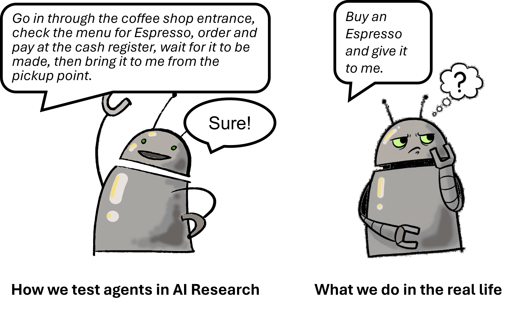
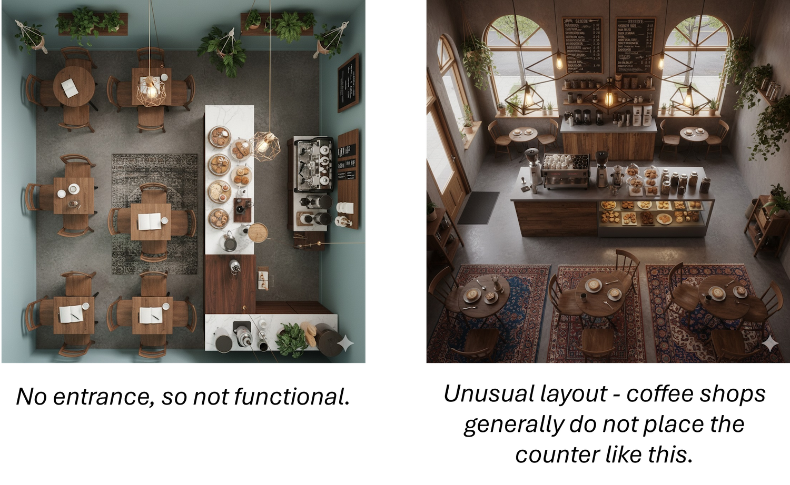
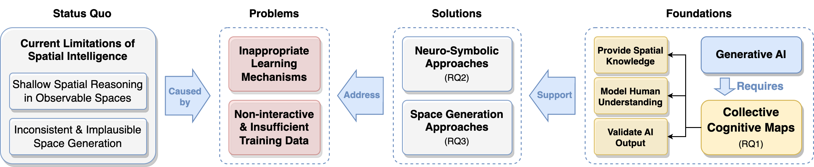

We're introducing the concept of the Cognitive Map to address current limitations of AI's spatial intelligence.
Humans understand space through the construction of "cognitive maps" - internal mental representations of the spaces we inhabit. These maps are semantic in nature, providing a rich and meaningful understanding of the space.
In this work, we propose a new foundation for spatial intelligence: the Artificial Cognitive Map - a structured, symbolic, and contextual representation of a spatial environment, designed to achieve human-like functionality. The Artificial Cognitive Map has two categories: the Collective Cognitive Map (CCM, understanding of crowds) and Specific Cognitive Maps (understanding of individuals).
The Collective Cognitive Map (CCM) represent a common spatial understanding of a group of people, or all human beings. We envision this is a critical area for advancing AI's ability.
Why do we need them?
- Shallow spatial reasoning in observable space
- Inconsistent & implausible space generation

Current research in spatial intelligence and VLAs often falls into a trap: while it continuously improves the ability to identify objects and locations in visual and linguistic information, these efforts rely heavily on the visibility of objects and the completeness of language instructions. Such an ideal scenario rarely occurs in the real world.

Two coffee shop images generated by Gemini 2.5 Flash Image. They all look like coffee shops. Under current evaluation metrics, both are counted as True Positives. AI will keep making mistakes.
What is our solution?
- Design Cognitive Map Language: Define cognitive maps for AI. Let it read, understand, and apply them, just like we do.
- Crowdsource Cognitive Maps: Build these maps with human insight. They will help AI based on our own knowledge of a space.
- Improve AI using Cognitive Maps: Put the maps to work. The AI will use this knowledge to think and create within spaces just like us.

We illustrate the current limitations of the AI's spatial intelligence, explain key problems causing these limitations, propose potential solutions for addressing the problems, and highlight the foundational role that cognitive maps could play in providing promising solutions together with generative AI.
What do cognitive maps deliver?
- A contextual spatial knowledge base.
- A tool for modeling human spatial understanding.
- A validator for measuring AI performance.